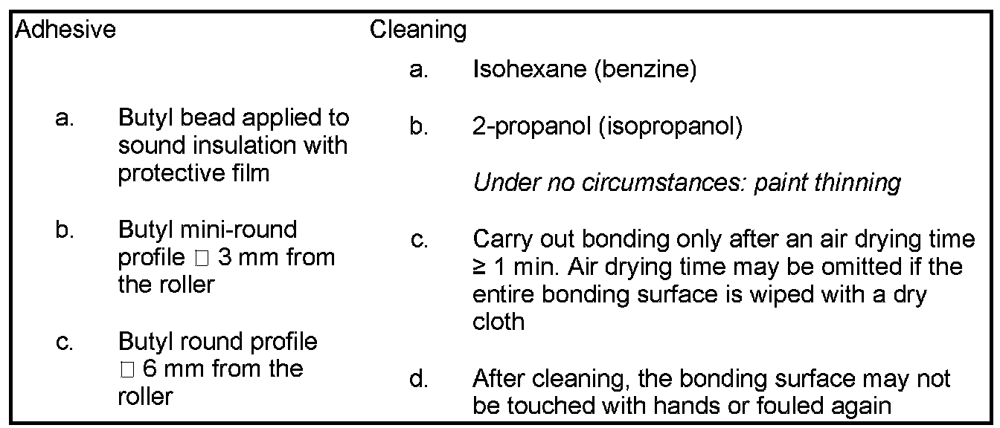
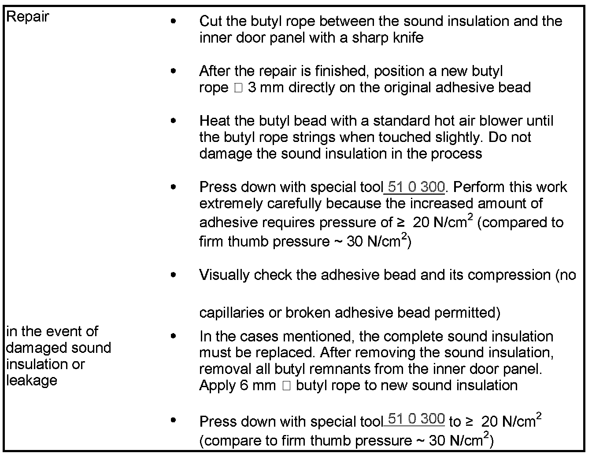

Sound Proofing / Insulation: Service and Repair
Erforderliche Spezialwerkzeuge:
- 51 0 300
51 48 ... Notes For Bonding Sound Insulation (SI), Doors
IMPORTANT: Do not pull on the sound insulation in jerks (risk of damage)
Work steps for removing and installing sound insulation:
- Click on "underlined cross-reference" to display at the end of this document
General:
Sound insulation is bonded to the inner door panel.
Bonded sound insulation must not be subjected to load (e.g. leak test) before 5 hours have elapsed.
On-the-job safety:
When working with bonding products (adhesive, cleaning agent, etc.):
- Wear safety goggles, protective gloves and if necessary an apron.
- Ensure rooms are well ventilated.
- Change work clothing contaminated with adhesive immediately.
- Change work clothing contaminated with solvents and swelling agents immediately (keep spare work clothing on hand).
- Take skin protection measures, provide washing facilities including hot water, use silicone-free skin creams
- Provide eye douche facilities, change water regularly (once a month).
- Comply with the relevant safety regulations
Handling adhesive area on inner door panel:

Repair in area of sound insulation, door:

The sound insulation must be bonded watertight below the door lock:
- Flat bonding surface required all round
- No bonding in event of moisture (e.g. condensation, etc.)
- Bonding area must not show any traces of adhesion-reducing residues (e.g. separating agents, greases, oils, paraffins, plastisols, cavity wax, polishing dust residues, etc.)
- Remove the protective film directly before joining (under no circumstances remove earlier, since the butyl, because of its stickiness, will very quickly pick up adhesion-reducing dirt contaminants)
- The sound insulation must be attached with positional accuracy to the inner door panel, because it is no longer possible to change the position without damaging the butyl bead
- With repainted areas, the maximum permitted temperature of 90° C may not be exceeded in the area of the sound insulation. Otherwise, the sound insulation must be removed (and replaced, if necessary).
Expiry date of adhesive:
24 months, see label on packaging
Disposal of the cleaning cloth:
Cleaning cloths and cleaning agent residues are hazardous waste (see also safety data sheet)
Disposal of adhesive:
Hazardous waste (see also safety data sheet)
Work steps for removing and installing sound insulation:
See repair instructions